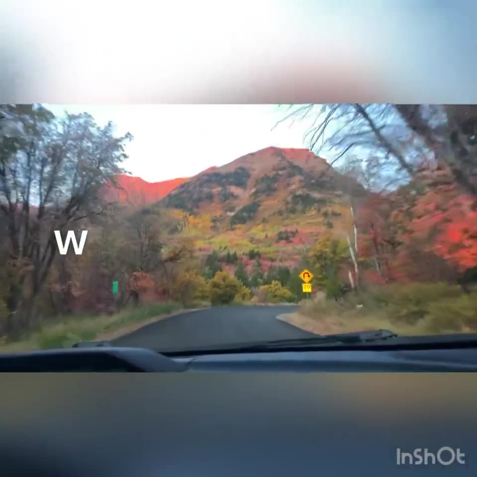

w001
The blessing after the ultrasound
w002
The tip of the spear
w003
Anthon Walker McFadden

w004
Fifty-four more feet

w005
The ceiling of the man cave

w006
A junior Wildcat at eight

w007
The first jump off Meadowbrook Bridge

w008
The log above the falls at North Fork

w009
The cookies and the invitation to Coach Norah

w010
Walker's baptism

w011
The first rugby practice

w012
Winning the grand final

w013
The team awards from Coach Rob

w014
Best on Ground
w015
The bloody nose

w016
His boys in New Canaan

w017
Back to football with the Rams

w018
Wrestling his brothers
w019
The video he made for Hattie

w020
I love you, Mom

w021
Belle and Patricia

w022
I got this, Dad

w023
Tess reads her poem
w024
Seventeen inches overnight
w025
The house built for the gatherer
w026
The last words at the door

w027
It sounds like somebody else is listening

w028
Elder Holland at the funeral
w029
Caitlin Anderson's sketch

w030
March 4th and March 5th

w031
The last family picture

w032
The Scout

w033
The music at the funeral

w034
Peace in Christ

w035
The haka in the parking lot

w036
What it means to love like Walker

w037
Breakfast burritos

w038
New Zealand with Hattie

w039
The last hug
w040
I command your body to heal

w041
Jason Hall

w042
Arthur Pokere

w043
My brother Lee

w044
The shape of the promise

w045